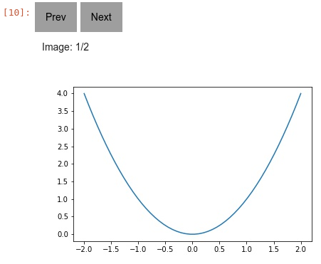

k1lib.viz module
This module is for nice visualization tools. This is exposed automatically with:
from k1lib.imports import *
viz.mask # exposed
- k1lib.viz.daisyUI()[source]
Grabs a nice subset of DaisyUI, just enough for a dynamic site that looks good enough
- class k1lib.viz.SliceablePlot(plotF: Callable[[slice], None], slices: slice | List[slice] = slice(None, None, None), plotDecorators: List[_PlotDecorator] = [], docs='')[source]
This is a plot that is “sliceable”, meaning you can focus into a particular region of the plot quickly. A minimal example looks something like this:
import numpy as np, matplotlib.pyplot as plt, k1lib x = np.linspace(-2, 2, 100) def normalF(): plt.plot(x, x**2) @k1lib.viz.SliceablePlot.decorate def plotF(_slice): plt.plot(x[_slice], (x**2)[_slice]) plotF()[70:] # plots x^2 equation with x in [0.8, 2]
So,
normalFplots the equation \(x^2\) with x going from -2 to 2. You can convert this into aSliceablePlotby adding a term of typesliceto the args, and decorate withdecorate(). Now, every time you slice theSliceablePlotwith a specific range,plotFwill receive it.How intuitive everything is depends on how you slice your data.
[70:]results in x in [0.8, 2] is rather unintuitive. You can change it into something like this:@k1lib.viz.SliceablePlot.decorate def niceF(_slice): n = 100; r = k1lib.Range(-2, 2) x = np.linspace(*r, n) _slice = r.toRange(k1lib.Range(n), r.bound(_slice)).slice_ plt.plot(x[_slice], (x**2)[_slice]) # this works without a decorator too btw: k1lib.viz.SliceablePlot(niceF) niceF()[0.3:0.7] # plots x^2 equation with x in [0.3, 0.7] niceF()[0.3:] # plots x^2 equation with x in [0.3, 2]
The idea is to just take the input
slice, put some bounds on its parts, then convert that slice from [-2, 2] to [0, 100]. Check outk1lib.Rangeif it’s not obvious how this works.A really cool feature of
SliceablePlotlooks like this:niceF().legend(["A"])[-1:].grid(True).yscale("log")
This will plot \(x^2\) with range in [-1, 2] with a nice grid, and with y axis’s scale set to log. Essentially, undefined method calls on a
SliceablePlotwill translate intopltcalls. So the above is roughly equivalent to this:x = np.linspace(-2, 2, 100) plt.plot(x, x**2) plt.legend(["A"]) plt.grid(True) plt.yscale("log")
This works even if you have multiple axes inside your figure. It’s wonderful, isn’t it?
- k1lib.viz.plotSegments(x: List[float], y: List[float], states: List[int], colors: List[str] = None)[source]
Plots a line graph, with multiple segments with different colors.
Idea is, you have a normal line graph, but you want to color parts of the graph red, other parts blue. Then, you can pass a “state” array, with the same length as your data, filled with ints, like this:
y = np.array([ 460800, 921600, 921600, 1445888, 1970176, 1970176, 2301952, 2633728, 2633728, 3043328, 3452928, 3452928, 3457024, 3461120, 3463680, 3463680, 3470336, 3470336, 3467776, 3869184, 3865088, 3865088, 3046400, 2972672, 2972672, 2309632, 2504192, 2504192, 1456128, 1393664, 1393664, 472576]) s = np.array([1, 0, 0, 1, 0, 0, 1, 0, 0, 1, 0, 0, 0, 0, 0, 0, 0, 0, 0, 0, 0, 0, 1, 0, 0, 1, 0, 0, 1, 0, 0, 1]) plotSegments(None, y, s, colors=["tab:blue", "tab:red"])
- Parameters:
x – (nullable) list of x coordinate at each point
y – list of y coordinates at each point
states – list of color at each point
colors – string colors (matplotlib color strings) to display for each states
- class k1lib.viz.Carousel(searchMode: int = 0)[source]
- __init__(searchMode: int = 0)[source]
Creates a new Carousel that can flip through a list of images/html. Will even work even when you export the notebook as html. Example:
x = np.linspace(-2, 2); plt.plot(x, x ** 2); im1 = plt.gcf() | toImg() x = np.linspace(-1, 3); plt.plot(x, x ** 2); im2 - plt.gcf() | toImg() im3 = "<h1>abc</h1><div>Some content</div>" # can add html [im1, im2, im3] | viz.Carousel() # displays in notebook cell
There’s also a builtin search functionality that works like this:
[ "<h1>abc</h1><div>Some content 1</div>", "<h1>def</h1><div>Some other content 2</div>", "<h1>ghi</h1><div>Another content 3</div>", ] | viz.Carousel(searchMode=1) [ ["<h1>abc</h1>", "<div>Some content 1</div>"], ["<h1>def</h1>", "<div>Some other content 2</div>"], ["<h1>ghi</h1>", "<div>Another content 3</div>"], ] | viz.Carousel(searchMode=2)
The first mode will search for some text inside the html content. The second mode will search inside the title only, that means it’s expecting to receive Iterator[title, html/img]
- Parameters:
imgs – List of initial images. Can add more images later on by using
__ror__()searchMode – 0 for no search, accepts Iterator[html/img], 1 for search content, accepts Iterator[html/img], 2 for search title, accepts Iterator[title, html/img]
- class k1lib.viz.Toggle[source]
- __init__()[source]
Button to toggle whether the content is displayed or not. Useful if the html content is very big in size. Example:
x = np.linspace(-2, 2); plt.plot(x, x ** 2) plt.gcf() | toImg() | toHtml() | viz.Toggle()
This will plot a graph, then create a button where you can toggle the image’s visibility
- class k1lib.viz.ToggleImage[source]
This function is sort of legacy. It’s just
img | toHtml() | viz.Toggle()really
- class k1lib.viz.Scroll(height=300)[source]
- __init__(height=300)[source]
Creates a new preview html component. If content is too long, then it will only show the first 500px, then have a button to expand and view the rest. Example:
x = np.linspace(-2, 2); plt.plot(x, x ** 2) plt.gcf() | toImg() | toHtml() | viz.Scroll()
This will plot a preview of a graph :param height: height of the parent container
- k1lib.viz.confusionMatrix(matrix: Tensor, categories: List[str] = None, **kwargs)[source]
Plots a confusion matrix. Example:
k1lib.viz.confusionMatrix(torch.rand(5, 5), ["a", "b", "c", "d", "e"])
- Parameters:
matrix – 2d matrix of shape (n, n)
categories – list of string categories
kwargs – keyword args passed into
plt.figure()
- k1lib.viz.FAnim(fig, f, frames, *args, **kwargs)[source]
Matplotlib function animation, 60fps. Example:
# line below so that the animation is displayed in the notebook. Included in :mod:`k1lib.imports` already, so you don't really have to do this! plt.rcParams["animation.html"] = "jshtml" x = np.linspace(-2, 2); y = x**2 fig, ax = plt.subplots() plt.close() # close cause it'll display 1 animation, 1 static if we don't do this def f(frame): ax.clear() ax.set_ylim(0, 4); ax.set_xlim(-2, 2) ax.plot(x[:frame], y[:frame]) k1lib.FAnim(fig, f, len(x)) # plays animation in cell
- Parameters:
fig – figure object from plt.figure(…) command
f – function that accepts 1 frame from frames.
frames – number of frames, or iterator, to pass into function
- k1lib.viz.mask(img: Tensor, act: Tensor) Tensor[source]
Shows which part of the image the network is focusing on.
- Parameters:
img – the image, expected to have dimension of (3, h, w)
act – the activation, expected to have dimension of (x, y), and with elements from 0 to 1.
- class k1lib.viz.PDF(pdf: str = None, size=(700, 500))[source]
- __init__(pdf: str = None, size=(700, 500))[source]
Displays pdf in the notebook. Example:
viz.PDF("a.pdf") "a.pdf" | viz.PDF() viz.PDF("a.pdf", (700, 500)) "a.pdf" | viz.PDF(size=(700, 500))
If you’re exporting this notebook as html, then you have to make sure you place the generated html file in the correct directory so that it can reference those pdf files.
- Parameters:
pdf – relative path to pdf file
- class k1lib.viz.Html[source]
A string that will display rich html to a notebook. Example:
s = "Just a <b>regular</b> string" h = viz.Html(s) # this is an instance of viz.Html, but it's also still a string, as viz.Html subclasses str! h # running this in a notebook cell will display out the html
- class k1lib.viz.onload[source]
- __init__()[source]
Returns html code that will run the captured clis when that html is loaded. Example:
3 | (toJsFunc() | (viz.onload() | aS("x+3"))) | op().interface()
This displays html that will execute “x+3”, then inject it into the main body. At first glance, this seems useless. A much simpler solution exists:
3 | (toJsFunc() | aS("x+3")) | op().interface()
This would pretty much do the exact same thing. But there’s a subtle difference. The jsFunc output of the first line (the one with onload()) is some complex html, and of the second line (without onload()) is just a single number. This is useful in cases where you don’t want to render something right away (as that can take time/space), but want to defer rendering till later. This is roughly what the first line generates this html:
<div id="content">(Loading...)</div> <script> const data = 3; const customFunction = (x) => x+3; function onload() { document.querySelector("#content").innerHTML = customFunction(data); } onload(); </script>
While the second line generates this html:
6
These html is returned by the blocks
(viz.onload() | aS("x+3"))andaS("x+3")in JS, respectively.The value of this is that your custom function might do something that generates a whole bunch of html (like fetching an image somewhere, then return the base64-encoded image tag). If you were to do it the normal way, then you would execute your function, return the giant html to display. Meanwhile, if you use this cli, then when you’re moving html around, it’s relatively lightweight, and only when that html is embedded into a page will your custom function captured by
onloadexecute, and display outwards.Honestly this feels like another implementation of
toJsFunc
- class k1lib.viz.Clipboard(msg='Copy to clipboard')[source]
- class k1lib.viz.Download(fn: str = 'untitled', msg: str = 'Download file')[source]
- __init__(fn: str = 'untitled', msg: str = 'Download file')[source]
Returns some nice Html of a button that will download whatever’s piped into this into a file. Example:
"some data" | viz.Download("some_text_file.txt") # returns html string that downloads the file
- Parameters:
fn – desired file name
msg – message on the button
- class k1lib.viz.qrScanner(fName=None, facing='environment')[source]
Returns some nice Html displaying a live video feed that calls a function when a QR code is identified. Example:
ht = viz.qrScanner("qrIdentified") viz.Html(ht + "<script>function qrIdentified(data) { console.log("qr: ", data); }</script>")
After executing that in a cell, it should display a live video feed
- Parameters:
fName – js function name to be triggered
facing – ‘environment’ or ‘user’, determines the camera location
- class k1lib.viz.Popup(elem: str, popup: str)[source]
Makes an popup appear at the bottom right of an element after clicking on it. Example:
a = viz.Popup("<button>abc</button>", "<div>popup content</div>") b = f"{a}<pre>some\nother\ncontent</pre>" | toHtml()
- class k1lib.viz.Table(headers: list[str] = None, onclickFName: str = None, ondeleteFName: str = None, oneditFName: str = None, onclickHeaderFName: str = None, colOpts: list[list[str]] = None, sortF: str = None, selectable=False, selectCallback: str = None, height=None, objName: str = None, colsToHide: list[int] = None, perPage: int = None, numRows=None)[source]
- __init__(headers: list[str] = None, onclickFName: str = None, ondeleteFName: str = None, oneditFName: str = None, onclickHeaderFName: str = None, colOpts: list[list[str]] = None, sortF: str = None, selectable=False, selectCallback: str = None, height=None, objName: str = None, colsToHide: list[int] = None, perPage: int = None, numRows=None)[source]
Returns some nice Html displaying a table. Example:
res = enumerate("abcdef") | viz.Table(onclickFName="onclickF", ondeleteFName="deleteF") f"""<script> function onclickF(row, i, e) {{ console.log("onclickF: ", row, i, e); }} function deleteF(row, i, e) {{ console.log("deleteF: ", row, i, e); }} </script> {res}""" | toHtml() # creates html string and displays it in the notebook cell
Normally, if you want to display a plain old table, you can do
sometable | display(), which is the same assometable | head() | pretty() | stdout(), but that only gives you a static table. This class will still show the table, but you can specify an “onclickFName” which the system will call whenever the user clicks on a particular row. If “ondeleteFName” is specified, then a column full of delete buttons will be injected as the first column, and if the user clicks on it will execute the function you specified. The example above should be intuitive enough.If oneditFName is specified, then it allows editing a row at a time. After the user has typed in everything, that function will be called, and if successful, will update the table right away.
There’re these available options for each column (“colOpts”):
[“pad”, 10]: padding on all 4 sides, defaulted to 10 if not specified
“json”: if specified, will assume the row element to be a json and make it look nice
[“jsonWidth”, 400]: max width of json fields
[“jsonHeight”, 300]: max height of json fields
“clipboard”: if specified, will copy the contents of the cell to clipboard when user clicks on it
Say you have 3 columns, and you want:
Column 1: json with max width of 500px, copies its contents to clipboard onclick
Column 2: nothing special
Column 3: copies its contents to clipboard onclick
Then “colOpts” should be [[“json”, [“jsonWidth”, 500], “clipboard”], [], [“clipboard”]]
With tables that have complex features, there’s also a hidden “{pre}_obj” JS object that has a bunch of useful functions, as well as callbacks that allows you to do interactive things:
ui1 = enumerate("abcdef") | viz.Table(objName="something") f""" {ui1} <script> setTimeout(() => something.update([[1, 2], [3, 4], [5, 6]]), 1000); // updates the table's contents after 1 second setTimeout(() => console.log(something.data), 3000); // prints the table's data after 3 seconds </script> """ | toHtml()
Pagination {pre}_obj values:
async page_select(pageNum:int): selects a specific page, 0-indexed
async page_next(): goes to next page
async page_prev(): goes to previous page
async page_onselect(pageNum): function that should return list[list[str|int]] for the specific page it’s on. The returned result will be used to render the table. Don’t have to override this by default, it will just slice up the incoming data to return the correct page
- Parameters:
headers – a list of column names
onclickFName – global function that will be called whenever the user clicks on a specific item
ondeleteFName – global function that will be called whenever the user wants to delete a specific row
oneditFName – global function that will be called whenever the user finishes editing a specific row
onclickHeaderFName – global function that will be called whenever the user clicks on a specific header
colOpts – column options
sortF – takes in [table (list[list[str | number]]), col (int)] and returns the sorted table. Can put
Truein for the default sorterselectable – if True, make the row bold when user clicks on it, else don’t do that
selectCallback – function name to inject into global namespace so as to trigger
height – if specified, limits the table height to this many pixels, and add a vertical scrolling bar
objName – name of the JS object that contains functions to interact with the table
colsToHide – list of column indexes to hide internal selection. Does not cascade to onclickFName
perPage – if specified, splits the incoming data into multiple pages, and allow users to navigate around those pages
numRows – in pagination mode, this variable will be used to display the initial total number of pages. Purely aestheetic, no function